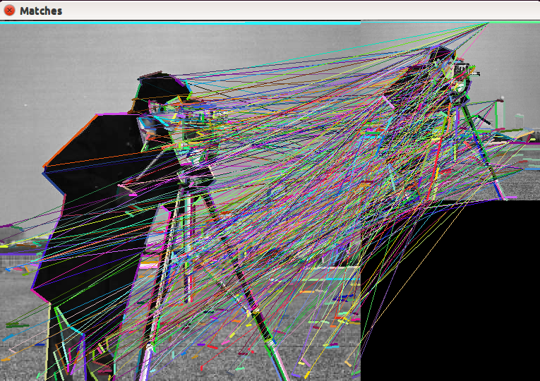

In this tutorial it will be shown how to:
In the following snippet of code, it is shown how to detect lines from an image. The LSD extractor is initialized with LSD_REFINE_ADV option; remaining parameters are left to their default values. A mask of ones is used in order to accept all extracted lines, which, at the end, are displayed using random colors for octave 0.
#include <opencv2/line_descriptor.hpp>
#include "opencv2/core/utility.hpp"
#include "opencv2/core/private.hpp"
#include <opencv2/imgproc.hpp>
#include <opencv2/features2d.hpp>
#include <opencv2/highgui.hpp>
#include <iostream>
using namespace cv;
using namespace std;
static const char* keys =
{ "{@image_path | | Image path }" };
static void help()
{
cout << "\nThis example shows the functionalities of lines extraction " << "furnished by BinaryDescriptor class\n"
<< "Please, run this sample using a command in the form\n" << "./example_line_descriptor_lines_extraction <path_to_input_image>" << endl;
}
int main( int argc, char** argv )
{
/* get parameters from comand line */
CommandLineParser parser( argc, argv, keys );
String image_path = parser.get<String>( 0 );
if( image_path.empty() )
{
help();
return -1;
}
/* load image */
cv::Mat imageMat = imread( image_path, 1 );
if( imageMat.data == NULL )
{
std::cout << "Error, image could not be loaded. Please, check its path" << std::endl;
}
/* create a ramdom binary mask */
cv::Mat mask = Mat::ones( imageMat.size(), CV_8UC1 );
/* create a pointer to a BinaryDescriptor object with deafult parameters */
Ptr<BinaryDescriptor> bd = BinaryDescriptor::createBinaryDescriptor();
/* create a structure to store extracted lines */
vector<KeyLine> lines;
/* extract lines */
bd->detect( imageMat, lines, mask );
/* draw lines extracted from octave 0 */
cv::Mat output = imageMat.clone();
if( output.channels() == 1 )
cvtColor( output, output, COLOR_GRAY2BGR );
for ( size_t i = 0; i < lines.size(); i++ )
{
KeyLine kl = lines[i];
if( kl.octave == 0)
{
/* get a random color */
int R = ( rand() % (int) ( 255 + 1 ) );
int G = ( rand() % (int) ( 255 + 1 ) );
int B = ( rand() % (int) ( 255 + 1 ) );
/* get extremes of line */
Point pt1 = Point( kl.startPointX, kl.startPointY );
Point pt2 = Point( kl.endPointX, kl.endPointY );
/* draw line */
line( output, pt1, pt2, Scalar( B, G, R ), 5 );
}
}
/* show lines on image */
imshow( "Lines", output );
waitKey();
}
This is the result obtained for famous cameraman image:

Another way to extract lines is using LSDDetector class; such class uses the LSD extractor to compute lines. To obtain this result, it is sufficient to use the snippet code seen above, just modifying it by the rows
/* create a pointer to an LSDDetector object */
Ptr<LSDDetector> lsd = LSDDetector::createLSDDetector();
/* compute lines */
std::vector<KeyLine> keylines;
lsd->detect( imageMat, keylines, mask );
Here’s the result returned by LSD detector again on cameraman picture:
Once keylines have been detected, it is possible to compute their descriptors as shown in the following:
#include <opencv2/line_descriptor.hpp>
#include "opencv2/core/utility.hpp"
#include "opencv2/core/private.hpp"
#include <opencv2/imgproc.hpp>
#include <opencv2/features2d.hpp>
#include <opencv2/highgui.hpp>
#include <iostream>
using namespace cv;
static const char* keys =
{ "{@image_path | | Image path }" };
static void help()
{
std::cout << "\nThis example shows the functionalities of lines extraction " << "and descriptors computation furnished by BinaryDescriptor class\n"
<< "Please, run this sample using a command in the form\n" << "./example_line_descriptor_compute_descriptors <path_to_input_image>"
<< std::endl;
}
int main( int argc, char** argv )
{
/* get parameters from command line */
CommandLineParser parser( argc, argv, keys );
String image_path = parser.get<String>( 0 );
if( image_path.empty() )
{
help();
return -1;
}
/* load image */
cv::Mat imageMat = imread( image_path, 1 );
if( imageMat.data == NULL )
{
std::cout << "Error, image could not be loaded. Please, check its path" << std::endl;
}
/* create a binary mask */
cv::Mat mask = Mat::ones( imageMat.size(), CV_8UC1 );
/* create a pointer to a BinaryDescriptor object with default parameters */
Ptr<BinaryDescriptor> bd = BinaryDescriptor::createBinaryDescriptor();
/* compute lines */
std::vector<KeyLine> keylines;
bd->detect( imageMat, keylines, mask );
/* compute descriptors */
cv::Mat descriptors;
bd->compute( imageMat, keylines, descriptors );
}
If we have extracted descriptors from two different images, it is possible to search for matches among them. One way of doing it is matching exactly a descriptor to each input query descriptor, choosing the one at closest distance:
#include <opencv2/line_descriptor.hpp>
#include "opencv2/core/utility.hpp"
#include "opencv2/core/private.hpp"
#include <opencv2/imgproc.hpp>
#include <opencv2/features2d.hpp>
#include <opencv2/highgui.hpp>
#include <iostream>
using namespace cv;
static const char* keys =
{ "{@image_path1 | | Image path 1 }"
"{@image_path2 | | Image path 2 }" };
static void help()
{
std::cout << "\nThis example shows the functionalities of lines extraction " << "and descriptors computation furnished by BinaryDescriptor class\n"
<< "Please, run this sample using a command in the form\n" << "./example_line_descriptor_compute_descriptors <path_to_input_image 1>"
<< "<path_to_input_image 2>" << std::endl;
}
int main( int argc, char** argv )
{
/* get parameters from comand line */
CommandLineParser parser( argc, argv, keys );
String image_path1 = parser.get<String>( 0 );
String image_path2 = parser.get<String>( 1 );
if( image_path1.empty() || image_path2.empty() )
{
help();
return -1;
}
/* load image */
cv::Mat imageMat1 = imread( image_path1, 1 );
cv::Mat imageMat2 = imread( image_path2, 1 );
waitKey();
if( imageMat1.data == NULL || imageMat2.data == NULL )
{
std::cout << "Error, images could not be loaded. Please, check their path" << std::endl;
}
/* create binary masks */
cv::Mat mask1 = Mat::ones( imageMat1.size(), CV_8UC1 );
cv::Mat mask2 = Mat::ones( imageMat2.size(), CV_8UC1 );
/* create a pointer to a BinaryDescriptor object with default parameters */
Ptr<BinaryDescriptor> bd = BinaryDescriptor::createBinaryDescriptor();
/* compute lines */
std::vector<KeyLine> keylines1, keylines2;
bd->detect( imageMat1, keylines1, mask1 );
bd->detect( imageMat2, keylines2, mask2 );
/* compute descriptors */
cv::Mat descr1, descr2;
bd->compute( imageMat1, keylines1, descr1 );
bd->compute( imageMat2, keylines2, descr2 );
/* create a BinaryDescriptorMatcher object */
Ptr<BinaryDescriptorMatcher> bdm = BinaryDescriptorMatcher::createBinaryDescriptorMatcher();
/* require match */
std::vector<DMatch> matches;
bdm->match( descr1, descr2, matches );
/* plot matches */
cv::Mat outImg;
std::vector<char> mask( matches.size(), 1 );
drawLineMatches( imageMat1, keylines1, imageMat2, keylines2, matches, outImg, Scalar::all( -1 ), Scalar::all( -1 ), mask,
DrawLinesMatchesFlags::DEFAULT );
imshow( "Matches", outImg );
waitKey();
}
Sometimes, we could be interested in searching for the closest k descriptors, given an input one. This requires to modify slightly previous code:
/* prepare a structure to host matches */
std::vector<std::vector<DMatch> > matches;
/* require knn match */
bdm->knnMatch( descr1, descr2, matches, 6 );
In the above example, the closest 6 descriptors are returned for every query. In some cases, we could have a search radius and look for all descriptors distant at the most r from input query. Previous code must me modified:
/* prepare a structure to host matches */
std::vector<std::vector<DMatch> > matches;
/* compute matches */
bdm->radiusMatch( queries, matches, 30 );
Here’s an example om matching among descriptors extratced from original cameraman image and its downsampled (and blurred) version:
The BynaryDescriptorMatcher class, owns an internal database that can be populated with descriptors extracted from different images and queried using one of the modalities described in previous section. Population of internal dataset can be done using the add function; such function doesn’t directly add new data to database, but it just stores it them locally. The real update happens when function train is invoked or when any querying function is executed, since each of them invokes train before querying. When queried, internal database not only returns required descriptors, but, for every returned match, it is able to tell which image matched descriptor was extracted from. An example of internal dataset usage is described in the following code; after adding locally new descriptors, a radius search is invoked. This provokes local data to be transferred to dataset, which, in turn, is then queried.
#include <opencv2/line_descriptor.hpp>
#include "opencv2/core/utility.hpp"
#include "opencv2/core/private.hpp"
#include <opencv2/imgproc.hpp>
#include <opencv2/features2d.hpp>
#include <opencv2/highgui.hpp>
#include <iostream>
#include <vector>
using namespace cv;
static const std::string images[] =
{ "cameraman.jpg", "church.jpg", "church2.png", "einstein.jpg", "stuff.jpg" };
static const char* keys =
{ "{@image_path | | Image path }" };
static void help()
{
std::cout << "\nThis example shows the functionalities of radius matching " << "Please, run this sample using a command in the form\n"
<< "./example_line_descriptor_radius_matching <path_to_input_images>/" << std::endl;
}
int main( int argc, char** argv )
{
/* get parameters from comand line */
CommandLineParser parser( argc, argv, keys );
String pathToImages = parser.get<String>( 0 );
/* create structures for hosting KeyLines and descriptors */
int num_elements = sizeof ( images ) / sizeof ( images[0] );
std::vector<Mat> descriptorsMat;
std::vector<std::vector<KeyLine> > linesMat;
/*create a pointer to a BinaryDescriptor object */
Ptr<BinaryDescriptor> bd = BinaryDescriptor::createBinaryDescriptor();
/* compute lines and descriptors */
for ( int i = 0; i < num_elements; i++ )
{
/* get path to image */
std::stringstream image_path;
image_path << pathToImages << images[i];
/* load image */
Mat loadedImage = imread( image_path.str().c_str(), 1 );
if( loadedImage.data == NULL )
{
std::cout << "Could not load images." << std::endl;
help();
exit( -1 );
}
/* compute lines and descriptors */
std::vector<KeyLine> lines;
Mat computedDescr;
bd->detect( loadedImage, lines );
bd->compute( loadedImage, lines, computedDescr );
descriptorsMat.push_back( computedDescr );
linesMat.push_back( lines );
}
/* compose a queries matrix */
Mat queries;
for ( size_t j = 0; j < descriptorsMat.size(); j++ )
{
if( descriptorsMat[j].rows >= 5 )
queries.push_back( descriptorsMat[j].rowRange( 0, 5 ) );
else if( descriptorsMat[j].rows > 0 && descriptorsMat[j].rows < 5 )
queries.push_back( descriptorsMat[j] );
}
std::cout << "It has been generated a matrix of " << queries.rows << " descriptors" << std::endl;
/* create a BinaryDescriptorMatcher object */
Ptr<BinaryDescriptorMatcher> bdm = BinaryDescriptorMatcher::createBinaryDescriptorMatcher();
/* populate matcher */
bdm->add( descriptorsMat );
/* compute matches */
std::vector<std::vector<DMatch> > matches;
bdm->radiusMatch( queries, matches, 30 );
/* print matches */
for ( size_t q = 0; q < matches.size(); q++ )
{
for ( size_t m = 0; m < matches[q].size(); m++ )
{
DMatch dm = matches[q][m];
std::cout << "Descriptor: " << q << " Image: " << dm.imgIdx << " Distance: " << dm.distance << std::endl;
}
}
}
{kind=link}
{kind=link}